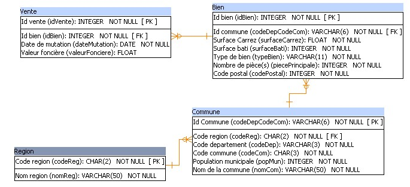
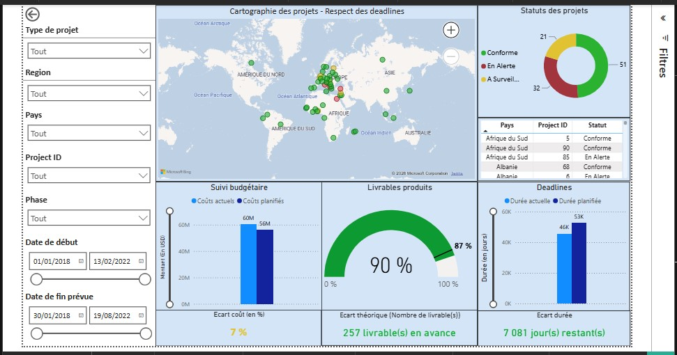
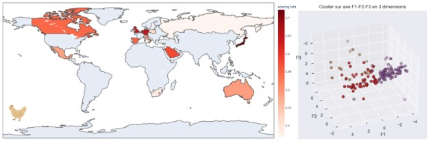
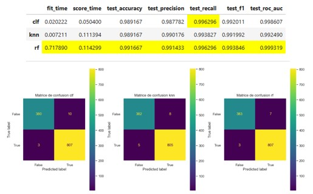
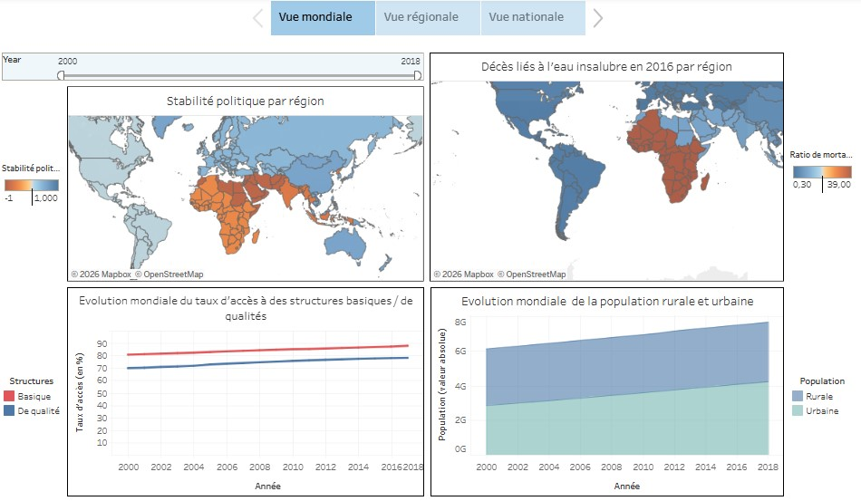
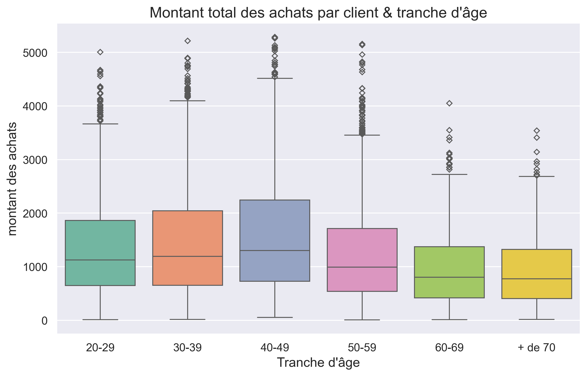

DE CLER Yoann
Data Analyst
À propos
En fin de formation Data Analyst chez OpenClassrooms, je développe des compétences en SQL, Python, Excel et Power BI appliquées à l’analyse de données, au reporting et à la création de tableaux de bord. Fort d’une expérience en courtage en crédit immobilier, j’apporte rigueur, sens de l’analyse et compréhension des besoins métiers afin de contribuer à la fiabilité des données et au pilotage d’activité.
CV
Contact
- Téléphone : 06 28 98 96 31
- Email : decler.yoann@mail.com
-
LinkedIn

-
GitHub

Profil Data
Compétences techniques
- Collecte et préparation de données (data cleaning, structuration)
- Analyse exploratoire de données (EDA)
- Modélisation de données (relationnel, jointures SQL)
- Analyse multivariée (ACP)
- Clustering (K-means, CAH)
- Machine Learning supervisé (modèles prédictifs simples)
- Interprétation et restitution des résultats (storytelling data)
Outils
- Python (Pandas, NumPy, Matplotlib, Seaborn)
- SQL (MySQL / SQLite)
- Excel (tableaux croisés dynamiques, analyse)
- Power BI
- Tableau Software / Tableau Public
- Jupyter Notebook
- VS Code
- KNIME (workflow data / automatisation)
- Git / GitHub (versioning basique)
Soft skills
- Esprit d’analyse et de synthèse
- Résolution de problèmes
- Rigueur et attention aux détails
- Autonomie dans la gestion de projets
- Communication claire avec non-techniciens
- Storytelling et vulgarisation des analyses
- Organisation et gestion de projet
- Curiosité et apprentissage continu
Mes Projets principaux
Vous trouverez ici le répertoire Github de mes principaux projets, détaillant leurs objectifs, leurs pipelines et leurs résultats

Créer et utiliser une base de données SQL
Objectif : Créer un modèle de données permettant d'analyser et prévoir les futures ventes immobilières

Créer un tableau de bord dynamique avec Power BI
Objectif : Suivre l'avancement des projets grâce à des KPI et indicateurs décisionnels

Réaliser une étude de marché
Objectif : Identifier les pays les plus attractifs pour l'export de volaille

Détecter des faux billets
Objectif :Développer un modèle prédictif permettant d'identifier les faux billets

Etude sur l'eau potable
Objectif : Identifier les pays présentant des difficultés d'accès à l'eau potable et déterminer ceux pour lesquels une intervention est la plus pertinente au regard des indicateurs disponibles.

Analyse des ventes d'une boutique en ligne
Objectif : Analyser les ventes et les comportements clients d'une boutique en ligne afin d'identifier des leviers d'amélioration de la performance
Autres projets réalisés
| Projet | Objectif | Compétences |
|---|---|---|
| Analyse des ventes e-commerce | Analyser les performances commerciales et produire des reportings décisionnels | Excel, KPI, Data visualisation, Storytelling |
| Requêter une base de données SQL | Modéliser une base relationnelle et réaliser des analyses avec SQL | SQL, Modélisation, Schéma relationnel |
| Étude santé publique (FAO) | Analyse de la sous-nutrition mondiale et production d’indicateurs globaux | Python, Pandas, Data cleaning, Analyse exploratoire |
| Optimisation des données boutique | Nettoyage et fiabilisation des données de stock et ventes | Python, Data cleaning, Jointures, Analyse exploratoire |
| Égalité femmes-hommes (KNIME / RGPD) | Automatiser un reporting RH conforme RGPD avec KPI | KNIME, RGPD, ETL, KPI RH, Data visualisation |